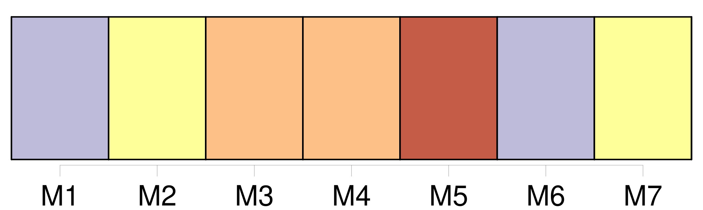
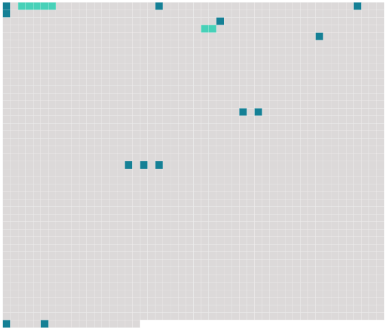

Longueur nb maillons : 15 mentions |
 |
[Balthazar] , [le cheval de madame François] , une bête trop grasse, tenait la tête de la file. [Il] marchait, dormant à demi, dodelinant des oreilles, lorsque, à la hauteur de la rue de Longchamp, un sursaut de peur [le] planta net sur [ses] quatre pieds. [1 phrases]
Madame François, adossée à une planchette contre ses légumes, regardait, ne voyait rien, dans la maigre lueur jetée à gauche par la petite lanterne carrée, qui n'éclairait guère qu'un des flancs luisants de [Balthazar] [4 phrases]
Elle s'était penchée, elle avait aperçu, à droite, presque sous les pieds [du cheval] , une masse noire qui barrait la route. [2 phrases] Il paraissait d'une longueur extraordinaire, maigre comme une branche sèche ; le miracle était que [Balthazar] ne l'eût pas cassé en deux d'un coup de sabot. [35 phrases] Elle remonta, s'adossa contre la planchette, assise de biais, tenant les guides de [Balthazar] , [qui] se remit en marche, se rendormant, dodelinant des oreilles. [17 phrases] Alors, elle se tut, lâchant un peu les guides sur l'échine de [Balthazar] , [qui] suivait [son] chemin en bête connaissant chaque pavé. [49 phrases] La maraîchère avait pris [Balthazar] par la bride, [le] poussant, acculant la voiture, les roues contre le trottoir. |
 |
Il est possible de télécharger la ressource sur la page Ortolang |
Si vous avez des questions ou vous voyez des erreurs, merci d'envoyer un mail à silvia.federzoni89@gmail.com |